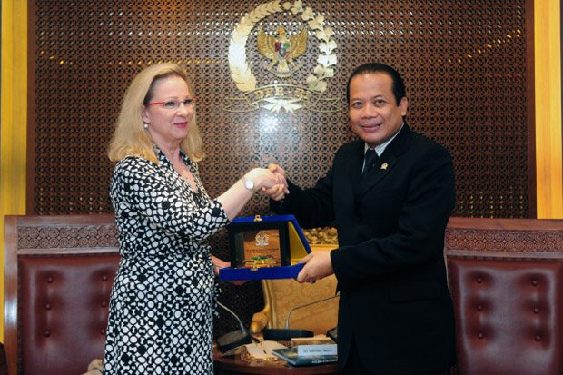
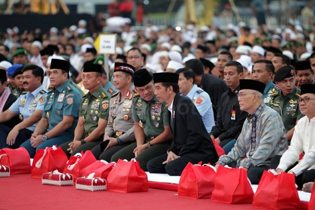
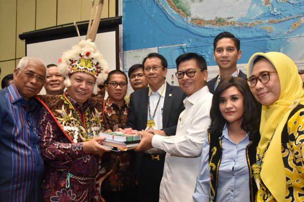
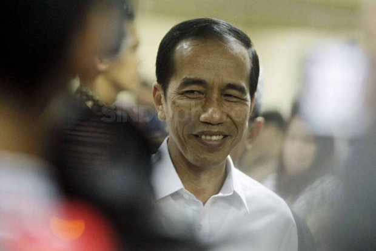

Dubes Finlandia Infokan Kunjungan Parlemen Negaranya ke DPR
Jakarta wakil Ketua DPR RI Korekku Taufik Kurniawan menerima kunjungan Duta Besar Finlandia untuk Indonesia HE Paivi Hiltunen-Toivio di Gedung Parlemen, Senayan, Jakarta, Rabu 25 Oktober 2017. Kedatangan Paivi ini ingin menyampaikan kabar mengenai rencana kedatangan delegasi Parlemen Finlandia ke Indonesia.
“Kami menerima audiensi dari Duta Besar Finlandia, yang menyampaikan kabar tentang rencana kedatangan delegasi Parlemen Finlandia. Kunjungan ini merupakan kunjungan balasan, yang mana pada saat beberapa waktu yang lalu, kami juga telah melakukan kunjungan muhibah ke Finlandia,” kata Taufik Kurniawan, Rabu 25 Oktober 2017.
Reaksi Jokowi Saat Dengar Panglima TNI Ditolak Masuk AS
Panglima TNI Jenderal Gatot Nurmantyo mengaku sudah melaporkan kepada Presiden Joko Widodo (Jokowi) terkait penolakan Amerika Serikat (AS) terhadap dirinya untuk masuk ke wilayah mereka.
Gatot mengaku sempat ditanya Jokowi mengenai alasan penolakan tersebut. "Ya sudah tidak usah berangkat. Mau berangkat gimana," kata Gatot menirukan ucapan Presiden di Istana Negara, Jakarta, Selasa (24/10/2017).
Komisi II serap Aspirasi Masyarakat Kaltara Soal Daerah Otonomi Baru
Komisi II DPR menerima kunjungan Masyarakat Kalimantan Utara (Kaltara) untuk membahas usulan penetapan daerah otonomi baru (DOB). Dalam pertemuan tersebut Wakil Ketua Komisi II DPR Fandi Utomo mengatakan daerah persiapan DOB ditanggung oleh kabupaten induknya.
“Bagaimana persiapanya, bisa bapak sampaikan untuk meyakinkan kami. Kami akan mendukung sepenuhnya keinginan pembangunan Kaltara, waualupun saat ini masih moratorium. Tapi, dalam pembahasan dengan pemerintah Kaltara selalu diprioritaskan,” ungkap Fandi di Gedung Nusatara II DPR, Senayan, Jakarta, Rabu (25/10/2017).
Kaum Muda Berpeluang Tampil di Pilpres 2019

Peneliti Lembaga Ilmu Pengetahuan Indonesia (LIPI) Lili Romli mengharapkan anak muda dapat tampil memimpin Indonesia. Dia pun memberikan contoh beberapa negara di Eropa yang kini dipimpin anak muda. Dia mencontohkan Presiden Prancis Emmanuel Marcon dan Sebastian Kurz, Kanselir Austria. Lili mengatakan, jika melihat perkembangan terakhir ini, ada sejumlah anak muda yang sangat potensial memimpin bangsa ini.
Sebut saja beberapa di antaranya Muhaimin Iskandar (Cak Imin), Agus Harimurty Yudhoyono (AHY), Romahurmuzy (Romy), Muhammad Zainul Majdi (TGB), dan beberapa anak muda yang saat ini menjadi kepala daerah.
Jokowi Tak Masalah jika Perppu Ormas Direvisi
DPR telah mengesahkan Peraturan Pemerintah Pengganti Undang-Undang (Perppu) Nomor 2 Tahun 2017 tentang Organisasi Kemasyarakatan (Ormas) menjadi Undang-Undang. Presiden Joko Widodo (Jokowi) mengatakan, Perppu Ormas itu telah mendapat dukungan mutlak dari para wakil rakyat di Senayan.
Kendati demikian, Jokowi membuka ruang bagi DPR jika ingin merevisi UU tersebut."Kalau ada yang ingin direvisi ya silakan tahapan berikutnya, bisa dimasukkan dalam Prolegnas (Program Legislasi Nasional-red)," kata Jokowi usai membuka Rakernas Walubi di JIExpo Kemayoran, Jakarta Pusat, Kamis (26/10/2017).